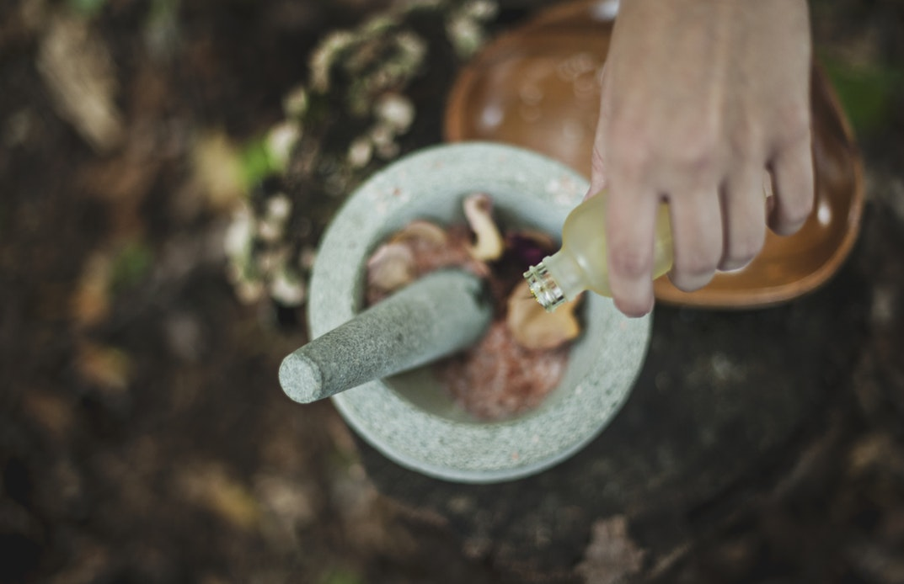

Prenez soin de
vous même.
Voici une présentation rapide de nos services.
ESCAPADE À LA GACILLY
aux Fleurs de Camomille

Offrez-vous une longue escapade bien être aux senteurs printanières de Camomille, fleur emblématique de nos champs de La Gacilly. Sur la base de techniques inspirées de la réflexologie, votre esthéticienne s’applique à dénouer les principales zones de tension par une attention particulière apportée aux pieds. Enduites de baume fondant, ses mains glissent ensuite de vos chevilles jusqu’à votre nuque en reproduisant une gestuelle méticuleuse qui libère du stress chaque partie de votre corps, une à une.
Elles s’attardent sur votre dos : chaque point de tension est soigneusement travaillé pour vous procurer un soulagement indescriptible. Le temps s’est arrêté. Incroyablement relaxés et en harmonie, votre corps et votre esprit retrouvent leur équilibre.
RÉSERVER
ÉVASION AFRICAINE
au Karité & Graines Chaudes d’Entada
Laissez-vous emporter jusqu’en Afrique lors d’un voyage sensoriel aux parfums suaves et gourmands. Secret de beauté des femmes africaines, le beurre de Karité chauffé devient une huile tiède nourrissante qui enveloppe votre corps dans une infinie douceur.
Les graines d’Entada, considérées comme porte-bonheur en Afrique, sont ensuite glissées tout le long de votre corps, délivrant leur douce chaleur bienfaisante.
Par de lents mouvements, notre esthéticienne esquisse des sillons tièdes au creux de vos reins, sur vos bras, vos mains, votre nuque... Véritable source d’évasion pour votre corps et votre esprit, la chaleur de ce soin favorise le relâchement des tensions. Ce rituel vous fait découvrir des sensations inédites.
RÉSERVER
ÉVASION JEUNESSE
1 Soin du visage + 1 Soin du corps
SOIN ANTI-RIDES à la Ficoïde Glaciale + ÉVASION AFRICAINE au Karité & Graines Chaudes d’Entada
Une pause efficacité et bien-être à prix tout doux Nos forfaits soins associent des soins de notre carte Institut afin de répondre à vos envies et attentes à des prix encore plus doux. Pour plus d’information, consultez les fiches spécifiques de chaque soin. Et n’hésitez pas à demander conseil à votre esthéticienne.
Ce forfait se compose de deux soins : SOIN ANTI-RIDES & FERMETÉ à la Ficoïde Glaciale MODELAGE BIENFAISANT aux Graines chaudes d’Entada.
RÉSERVER
SOIN APAISANT
à la Feuille de Sigesbeckia
Après avoir délicatement gommé votre visage, notre esthéticienne applique le sérum. Il apaise les épidermes fragiles. Un modelage prolonge l’effet du soin et vous procure une sensation de bien-être.
L’application d’un masque frais agit comme un pansement végétal réparateur.
RÉSERVER